Un punto de partida, origen de nuestra recopilación, del que es necesario iniciar nuestro recorrido, nos remonta a la segunda década del siglo XVI d.C., 1518 para ser más exactos, cuando la corona española designa al litoral venezolano como "La costa provincia de las perlas", reconociendo así la importancia que tal circunstancia merecía. Con ello, poco a poco, se terminó por borrar de la mente del conquistador el sueño del dorado, la ilusión de llegar a él para abrazar los tesoros de oro perdidos en la selva, dando paso a la realidad encontrada que estaba más cercana a sus ojos. En ese Litoral, bañado por las azules aguas del caribe, cual islote dormido por el tiempo, se había estado cultivando, como por mandato divino, el banco perlífero más grande que hasta entonces el mundo había conocido. A Cubagua, Coagua, como le decían los Guaqueries, Nueva Cádiz o Nuevo Comienzo como le llamaban los españoles, le correspondió la suerte, en los designios de Dios, de ser ese islote, cuyas primeras perlas extraídas, divulgaron su fama y su inmensa riqueza por España y el resto de una Europa que estaba sedienta de minerales preciosos para poder continuar su travesía de conquista por el nuevo continente.
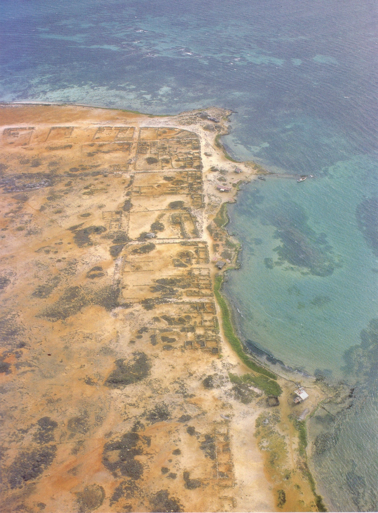
Fue en ese pedazo de tierra árida, de diecisiete (17) kilómetros cuadrados, olvidada por el tiempo, acariciada tan solo por el férreo salitre que corroe hasta la piedras más nobles, donde comienza nuestro reencuentro, tantas veces explorado y contado por todas las almas nobles que han pretendido conocer la fuente primigenia de la primera imagen de María de la que se tenga información en este continente.
Bien lo dice el viejo proverbio: "Dios escribe derecho en líneas torcidas”; quién podría pensar que en el primer establecimiento de los españoles en este continente, entre cardones, tunas, retamas, yaques, y cujíes, entre matorrales y ranchos dispersos de Guaqueríes, tostados por el sol, se iba a levantar el primer centro poblado que al correr de los años, sería el origen de la fe inquebrantable en María la del Valle.
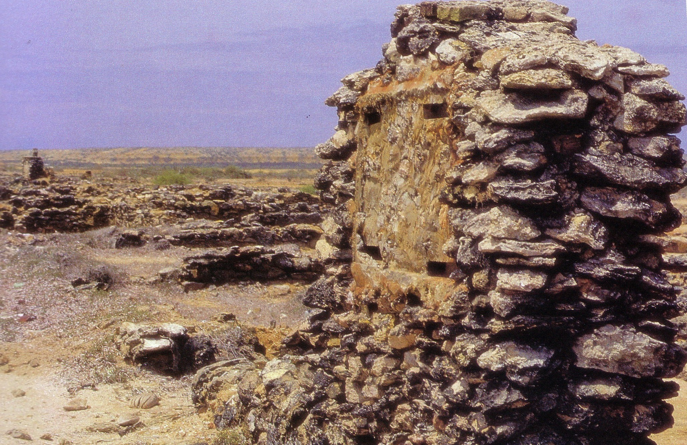
Para 1521, Cubagua deja de ser una ranchería y pasa a ser asiento de un núcleo urbano, nunca visto en estas tierras; se trataba de un gran acontecimiento para los nativos poder ver un escudo de armas, un ayuntamiento con sus autoridades militares y religiosas. Ello le ganó el título de "Villa santiago de Cubagua" en 1526, el de ciudad de Nueva Cádiz en 1528 y la categoría de ser el primer poblado español en Venezuela y América.
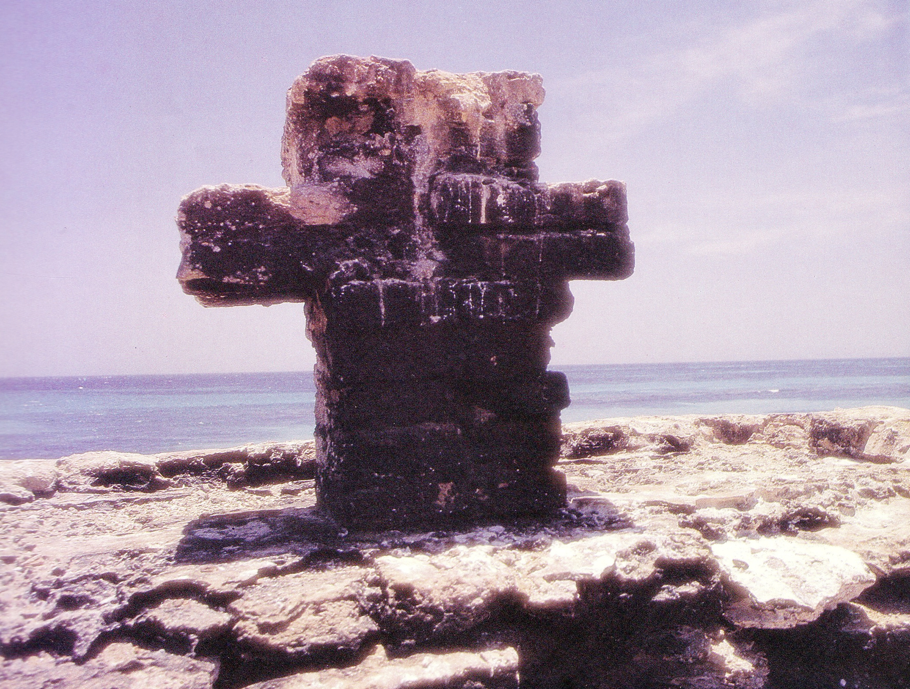
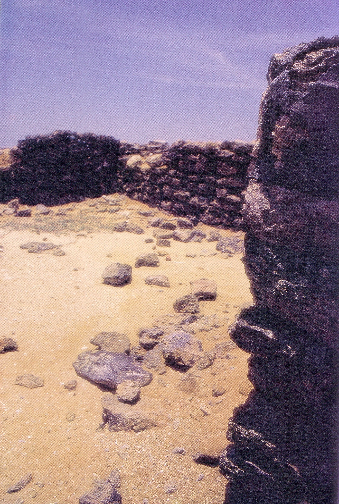
El desarrollo alcanzado en tan breve tiempo le permitió ser motivo de interés para los propios habitantes, piratas y corsarios que acariciaban la idea de enriquecerse fácilmente, mediante la explotación irracional de la mano de obra esclava o del pillaje y el saqueo.
Por esas cosas del destino, su existencia fue efímera, antes de 1540 los bancos de ostra comenzaron a decaer a causa de una explotación irracional y desmedida.
El devastador ciclón tropical de 1541 no hizo otra cosa que colocar la puntilla a una ciudad que se encontraba en agonía de muerte; sus calles habían contemplado la estampida de sus habitantes hacia los ostrales recién descubiertos en cabo de la Vela. Un año después de esta catástrofe natural, una orda de corsarios y piratas franceses, en su afán de buscar tesoros, pasaron la isla a fuego, terminando de destruir lo que quedaba de ella.
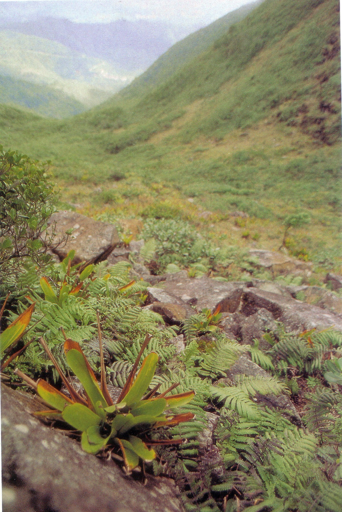
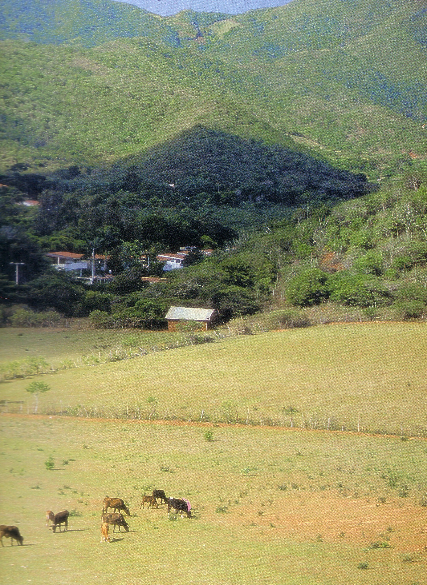
Muchos de los sobrevivientes, luego de la caída de la otrora rica ciudad de Cubagua, se trasladaron a Cumaná y Margarita en busca de tierras fértiles para el cultivo y la cría de ganado. Fue así como, entre 1520 y 1540, crecen con mayores énfasis algunos caseríos dispersos que ya estaban en pie en la isla de Margarita; entre ellos: San Juan Bautista, El Valle de Charaima, Pampatar, Santa Ana, La Villa del Espíritu Santo y la Asunción que posteriormente pasaría a ser la capital de la provincia de Margarita.
Fue así como La Paraguachoa, rica en abundancia de peces, a pesar de no haber sido agraciada por abundantes fuentes de agua dulce, la naturaleza nos la regalo generosa en tierras fértiles para el cultivo de frutales, amén de sus hermosos paisajes y de sus encantadoras playas que a través del tiempo le han merecido innumerables poemas de amor que destacan la heroicidad e hidalguía de sus hombres y la belleza de sus mujeres.
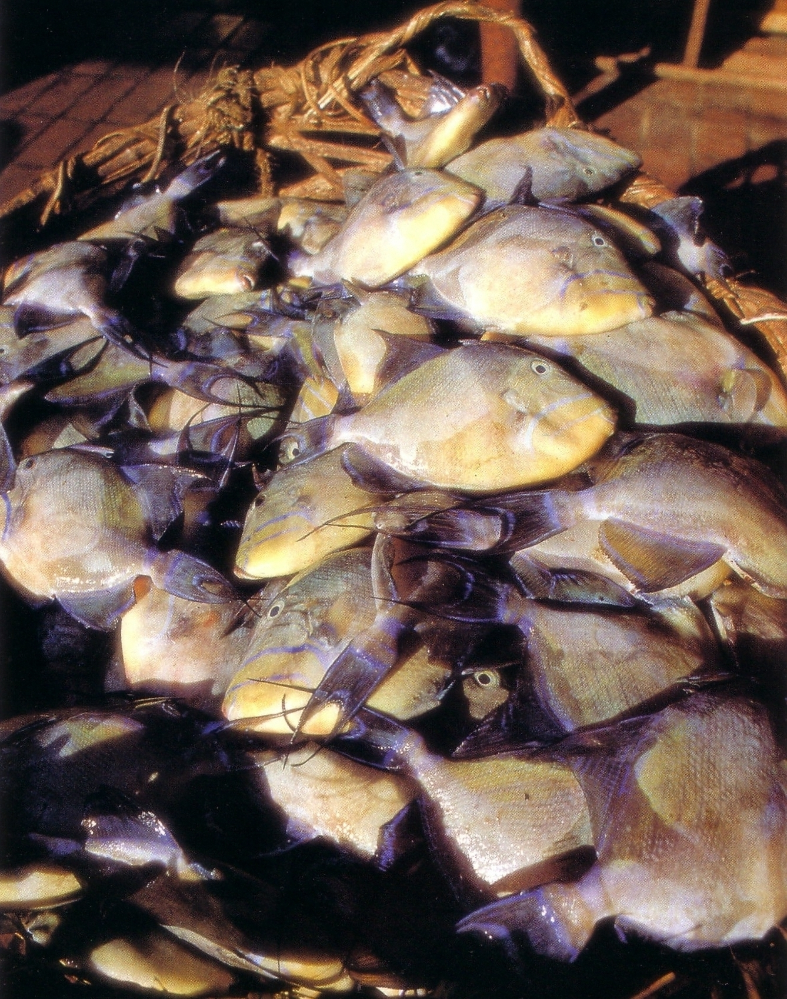
Nos olvidemos que, en sus años de apogeo, Cubagua vió nacer la edificación del monasterio de San Francisco y de la iglesia de Santiago de Cubagua, templo éste que conoció la entronización de la imagen de la Purísima Concepción, a su llegada a esa ciudad en 1530, proveniente de España.
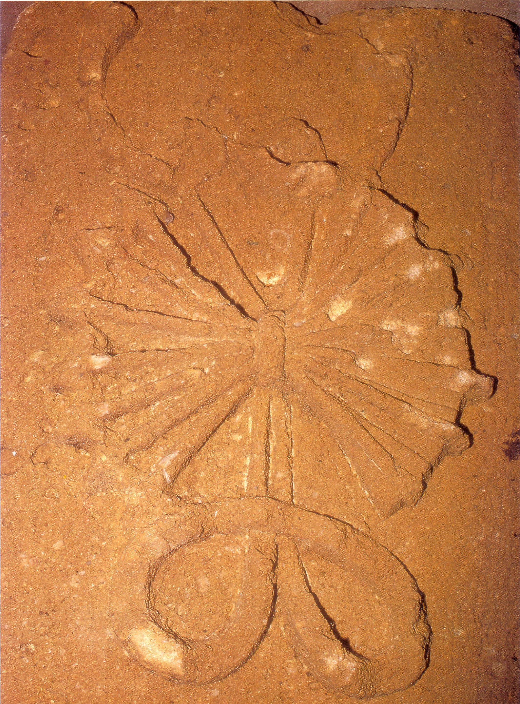
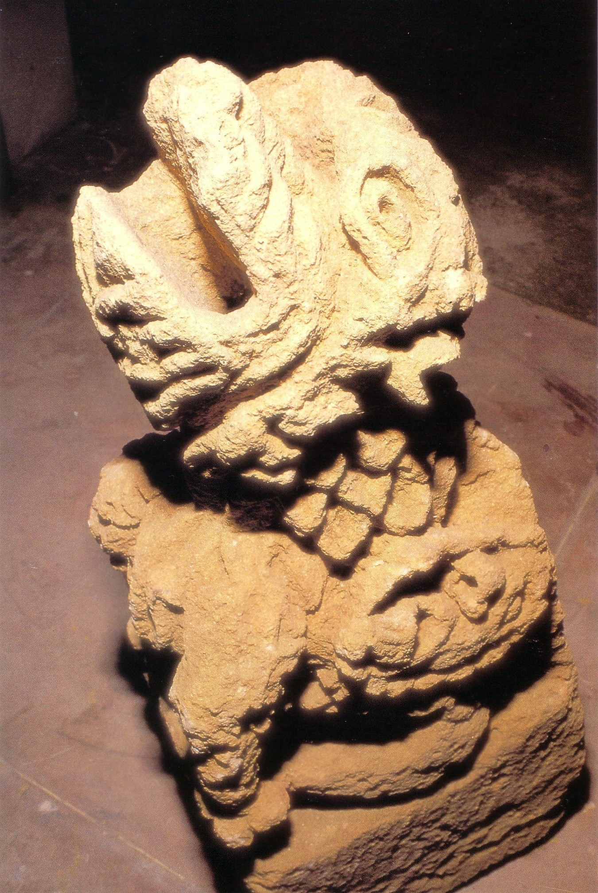
Doce años después, los habitantes de Nueva Cádiz que poseían tierras fértiles, animales y casas en el Valle de La Margarita, la trasladaron, junto con sus demás ornatos, a la ermita que, con anterioridad, se habrá levantado en esas tierras. Se presume que fue recibida por el cura Párroco Antonio Meléndez o por el vicario Francisco de Villacorta, quienes con autoridad ejercían esos ministerios en la isla de Cubagua.
Hasta dicha ermita se trasladaban los vecinos y emigrantes, desde diferentes sectores de la isla y de tierra firme; hacían el recorrido a pie, a varios días de camino. No olvidemos que se trataba del primer templo dedicado a Dios, nuestro señor y a la Virgen María, en esta isla y en tierras venezolanas.
Sus milagros y el reconocimiento de un pueblo que llegó a amarla tanto fueron los soportes, requeridos por las autoridades eclesiásticas, para solicitar con el tiempo su coronación y proclamación como patrona del oriente venezolano.
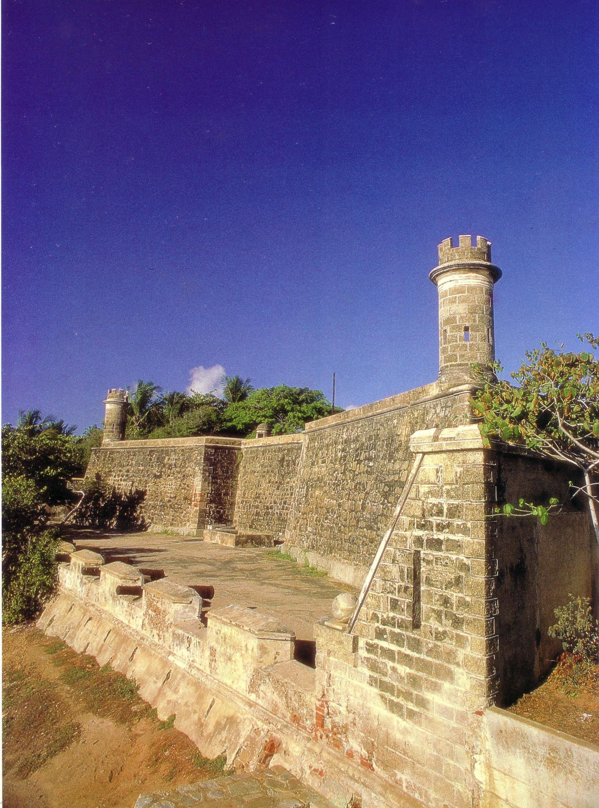
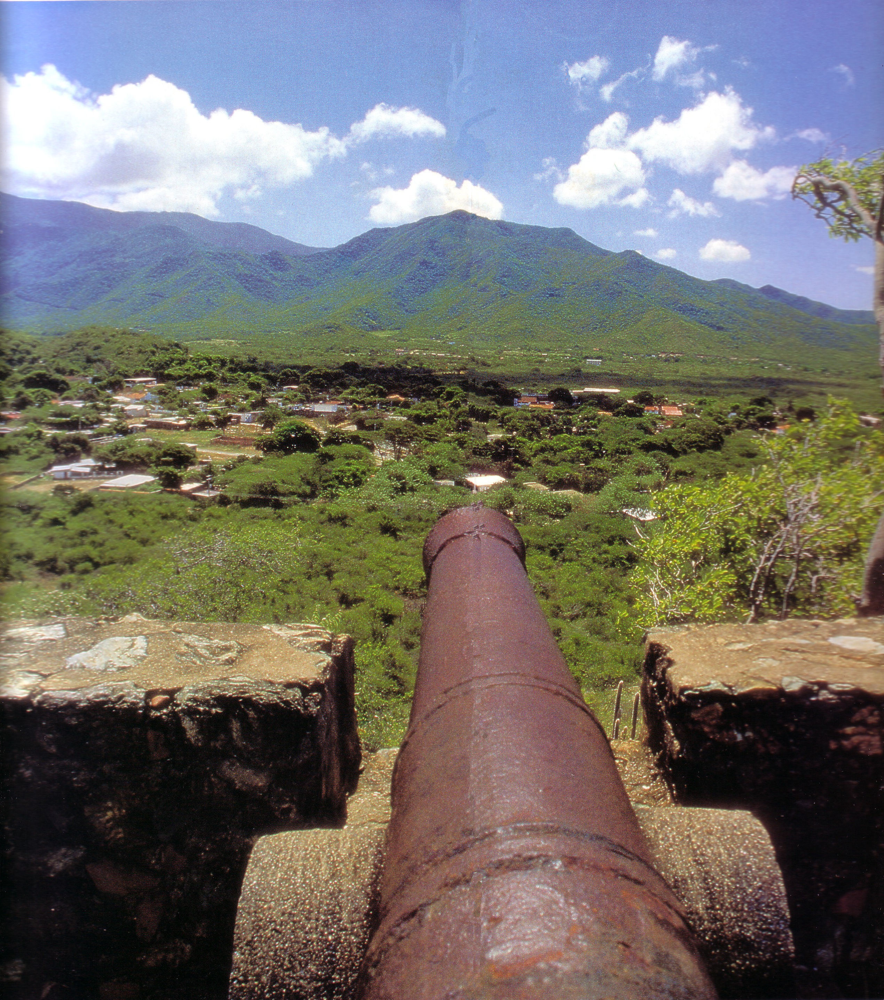
A causa de las innumerables incursiones de piratas y corsarios, saqueos, incendios y pillajes que produjeron entre 1565 y 1568, la villa del Espíritu Santo, a la cual pertenecía el caserío del Valle del Espíritu Santo, comenzó a despoblarse y en su lugar se inició el auge de la población de la Asunción, obligando a sus habitantes construir, en sitios estratégicos de la isla, fortalezas y castillos para la defensa.